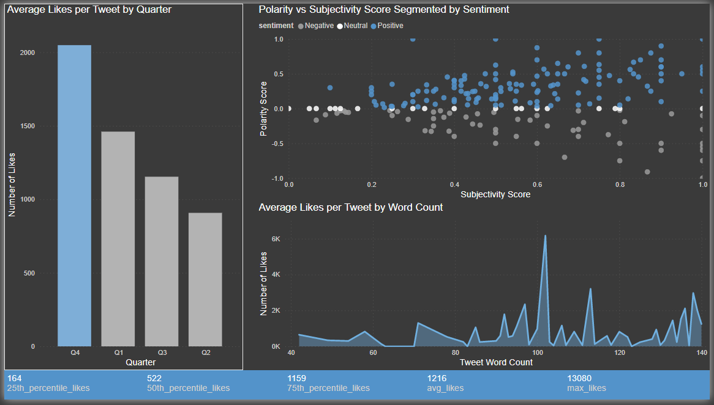

Twitter Sentimental Analysis
This project is an ETL (Extract, Transform and Load) pipeline that utilizes the Twitter API and the Tweepy package in Python to gather tweets from the OpenAI twitter account. The tweets are then parsed to extract number of likes and retweets for each tweet. These attributes are then transformed using Pandas dataframes before being loaded into a series of tables in pgAdmin.
To load the data, the project makes use of SQLAlchemy and psycopg2, which is a Python library that provides an ORM (Object-Relational Mapping) API for interacting with PostgreSQL (pgAdmin).
The primary goal of the project is to collect data on the engagement of the OpenAI twitter account and understand how the tweets are being received by the audience using ETL approach. The collected data is used to analyze the performance of the tweets over time and identify patterns in engagement.